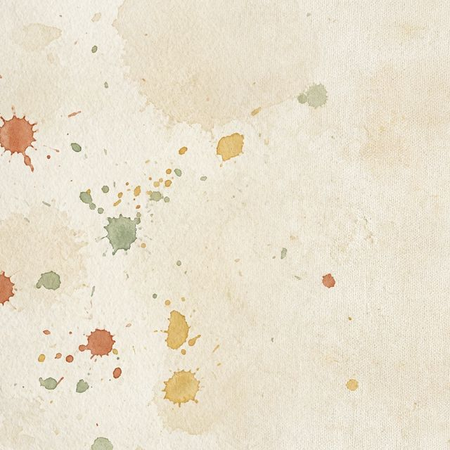
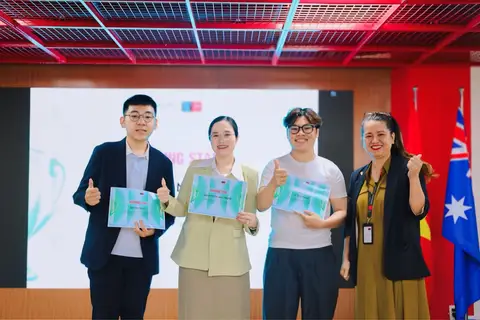
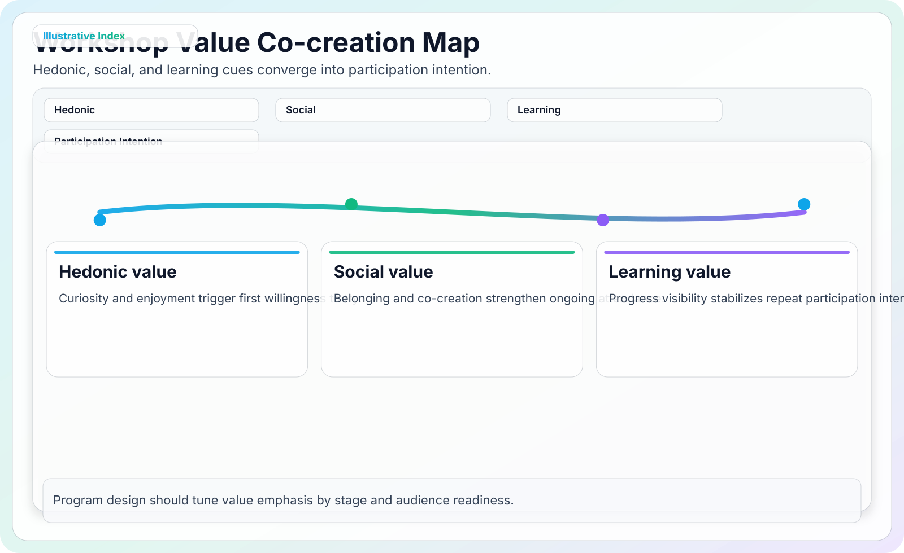
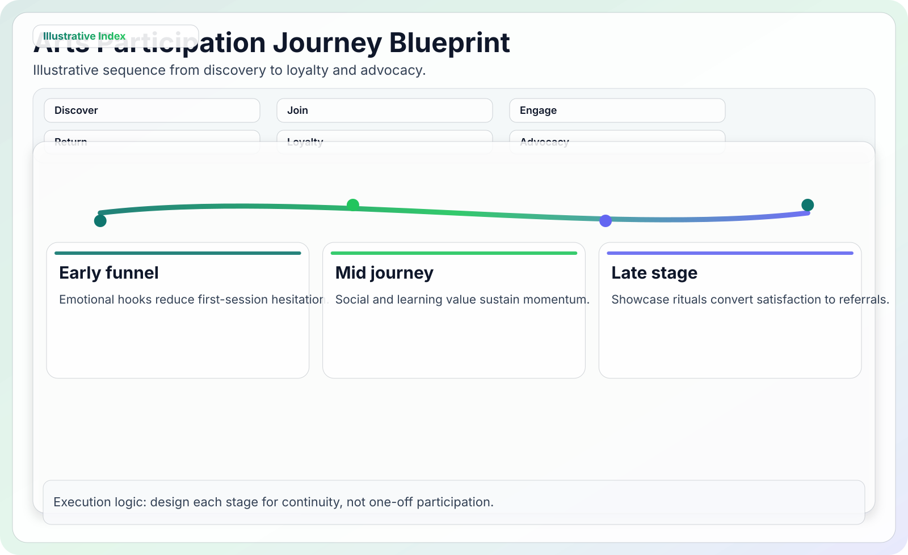
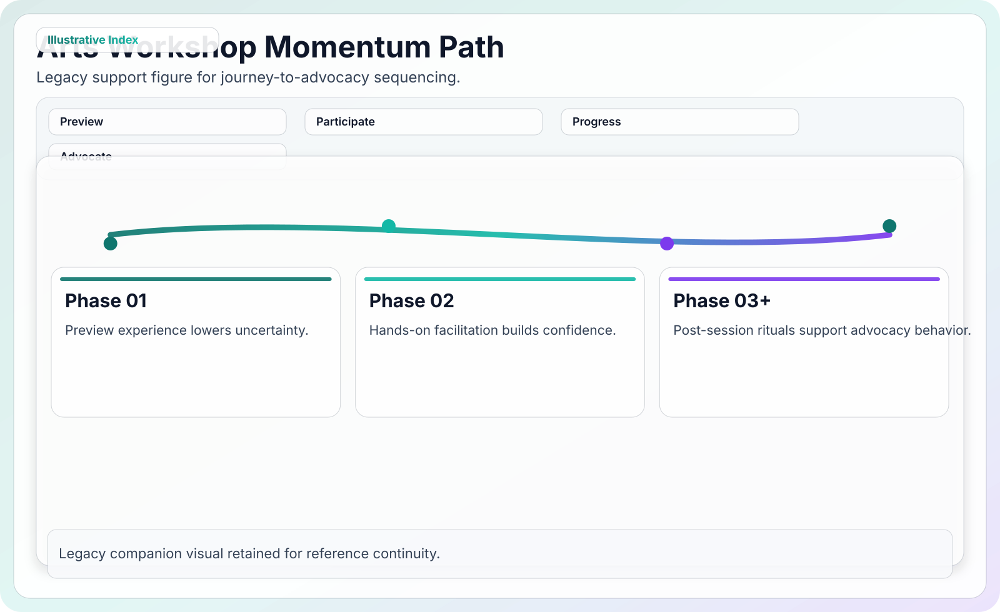

Context
Creative workshop Participatory experience design.
Back to all research
Participatory arts research
Art workshop: co-creation and customer interest
How participatory art experiences increase interest, satisfaction, and return intention by turning learning, social comfort, and creative ownership into a stronger attitude toward the workshop.
The co-creation journey
From shared creation to repeat interest
The study treats an art workshop as a service journey, not only a finished canvas. Participants first evaluate the experience value, then form attitude, and that attitude carries the effect into future participation intention.
Co-create
Participants shape themes, activities, and the sense of authorship.
Feel ownership
Learning, choice, and social comfort make the session feel personal.
Join again
A stronger attitude makes future participation more likely.
Recommend
Meaningful creation can turn participants into advocates.
What participants valued most
Four value cues explain why the workshop becomes desirable
The model was designed to separate surface enjoyment from the deeper cues that make a workshop feel worth booking: learning something new, feeling supported, being with others, and trusting the service setup.

Voice & choice
Participants respond better when they can shape parts of the experience.

Recognition
Creative effort feels stronger when participants feel seen and supported.

Meaningful creation
The process matters because people invest more when the result feels personal.

Community
Social comfort helps transform a class into a shared experience.
- Sample: 216 valid responses from Australian art and creative communities after attention and speed checks.
- Measures: 7-point Likert scales for consumption values and intention; semantic-differential items for attitude.
- Analysis: measurement checks, structural paths, and PROCESS Model 4 mediation with 5,000 bootstrap samples.
- Boundary: cross-sectional intention data cannot prove retention, loyalty, or post-visit behavior.
The impact
Learning value mattered most, but attitude carried the effect
The strongest value-to-attitude path was epistemic value. The practical reading is simple: people become more interested when the workshop promises curiosity, beginner confidence, and a process they can own.
Attitude explained
R2 = .571 for attitude.
Attitude → intention
Strong positive path, p < .001.
Top value driver
Epistemic value → attitude.
Strongest drivers of interest
| Path | Reported result | Plain reading |
|---|---|---|
| Epistemic value → attitude | β = .35, p < .001 | Learning and novelty were the strongest attitude builders. |
| Attitude → intention | β = .59, p < .001 | A better attitude made future participation more likely. |
| Model fit for attitude | R2 = .571 | The value variables explained more than half of attitude variance. |
| Validity guardrail | Several AVE values below .50 | Interpret the model with care and pair it with additional evidence. |
Moments from the research
The visual evidence is compact and specific
The gallery keeps the page close to the project: proof image, conceptual path, participation journey, and service-design map.

Application
Design art workshops people help shape
A better workshop pitch shows the process, not only the final canvas. The evidence points toward beginner confidence, supportive facilitation, and visible learning progress.
Learning value
Make progress visible before, during, and after the session.
Social value
Design the room for light interaction and shared encouragement.
Creative ownership
Give participants meaningful choices in theme, color, and pace.
Service design view: instructors, materials, room setting, and peer interaction all shape perceived value.
Lead with learning
Show what beginners will learn and where they will get help during the session.
Lower creative anxiety
Use process photos and supportive instructor cues instead of only polished final artwork.
Make the room social
Design seating and facilitation around light interaction, not silent individual production.
Measure return intent
Follow up after the session. This study measured intention, so retention still needs evidence.
Bottom line
Design art workshops people help shape.
Build confidence, social comfort, and curiosity before asking for the booking.
Selected references
Sources used in the study framework
- Ajzen, I. (1991). The theory of planned behavior. Organizational Behavior and Human Decision Processes.
- Bitner, M. J. (1992). Servicescapes: the impact of physical surroundings on customers and employees. Journal of Marketing.
- Holbrook, M. B., and Hirschman, E. C. (1982). The experiential aspects of consumption. Journal of Consumer Research.
- Sheth, J. N., Newman, B. I., and Gross, B. L. (1991). Why we buy what we buy. Journal of Business Research.
- Vargo, S. L., and Lusch, R. F. (2004, 2008). Service-dominant logic. Journal of Marketing; Journal of the Academy of Marketing Science.